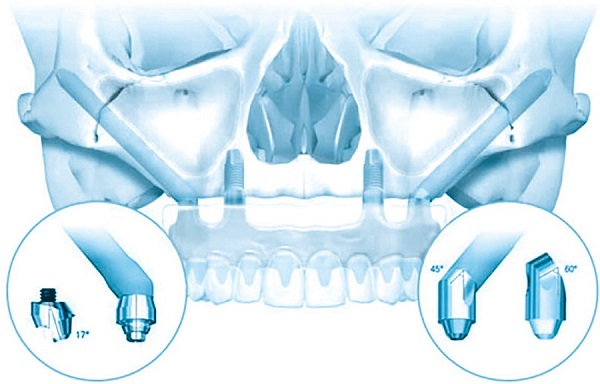
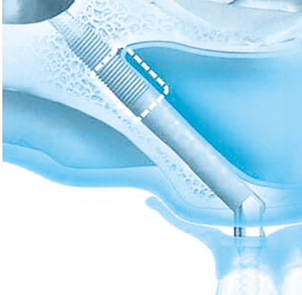
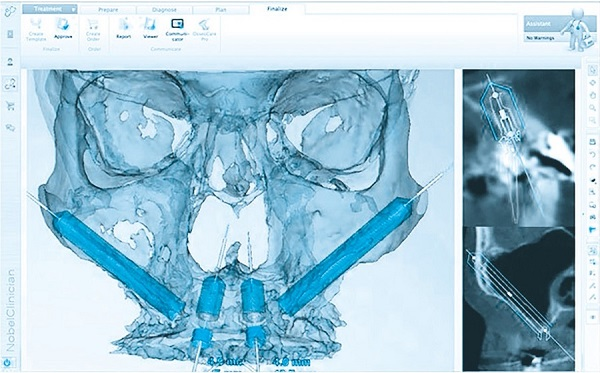

СКУЛОВЫЕ И ПТЕРИГОИДНЫЕ ИМПЛАНТАТЫ
Что такое скуловые и птеригоидные имплантаты?
Скуловые (или Zygomatic) и птеригоидные (или крыловидные) имплантаты представляют собой два типа длинных имплантатов, которые используются при протезировании зубов, когда у пациента диагностировано недостаточное количество костной ткани, или ее качество не позволяет закрепить имплантаты обычных размеров. В этих случаях используются более плотная кость, как та, что в области скуловой кости, чтобы закрепить имплантаты, поскольку она всегда сохраняет свою твердость и плотность.
Характеристики скуловых и птеригоидных имплантатов
Главная особенность этих имплантатов заключается в том, что они устанавливаются в две кости, не подверженные резорбции – скуловую и и ala major клиновидной кости (ala major ossis sphenoidalis [NA]). Кроме того, скуловые и птеригоидные имплантаты намного длиннее, чем обычные имплантаты: длина скуловых имплантатов варьируется от 30 до 55 мм, а крыловидных (птеригоидных) – от 15 до 20 мм. Такая длина необходима для обеспечения их надежной фиксации в кости. Именно поэтому скуловые и птеригоидные имплантаты Зигома и Зигоматик можно использовать даже при самых тяжелых атрофиях верхнечелюстной кости.
Три важных преимущества:
- Такое лечение является хорошей альтернативой использованию костных трансплантатов при большой челюстной резорбции;
- Безопасно сокращает время лечения, позволяет получить быстрый результат, а сама операция комфортна для пациента;
- Позволяет гарантировать улучшение эстетики улыбки любому пациенту, независимо от качества кости, на которую должны устанавливаться зубные имплантаты.
Однако необходимо учитывать, что в некоторых случаях скуловые и птеригоидные имплантаты должны быть дополнены имплантатами привычного размера, в зависимости от количества и качества доступной кости пациента.
Кому рекомендовано?
Все те пациенты, у которых наблюдается резорбция кости в области верхней или нижней челюсти, являются кандидатами на протезирование этими имплантатами. При этом причина дистрофии костной ткани не важна: этот метод протезирования применяется и после потери зубов по причине возраста, и при полной адентии, вызванной травмой или заболеваниями костного обмена. Индивидуальные изменения в костной структуре должны учитываться при диагностике и составлении плана лечения зубными имплантатами.
Имплантаты Bioline ZYGOMATIC (скуловые), Bioline i-Impants (Птеригоидные)
Отдельного внимания заслуживают импланты серии i-Impants. Специальное антибактериальное покрытие из анодированного золота, фрезерованная микрорезьба для сохранения костной ткани и высокой начальной стабильности делают эти импланты уникальными. Агрессивная резьба с квадратным сечением, высокая режущая способность, придают невероятную стабильность имплантату и предполагают высокий торк при его вкручивании. Все это в совокупности позволяет использовать данные имплантаты в самых разных клинических случаях и получать превосходные результаты. На первом месте всегда здоровье нашего пациента и если мы говорим о самой безболезненной имплантации, без швов, без разрезов, гематом и пост имплантационных отеках всегда на первом месте имплантаты i-Impants!
Поверхность имплантатов обрабатывается кальция фосфатом (STPI)
Это улучшает пост интеграцию имплантата, так как это идентично составу кости человека. Достигается лучшая конденсация кости и при этом мы имеем максимальный торк при установке имплантата. В момент имплантации нет излишнего сдавливания костных пластинок, так как между костью и имплантатом не нарушается кровоснабжение, не теряется пористость костной ткани. Все это увеличивает первичную стабильность имплантата и ускоряет время костной интеграции, за счёт этого увеличивается внутренняя стабильность имплантата и уменьшается резорбция костной ткани вокруг шейки имплантата. Наши птеригоиды компании BIOLINE можно нагружать в течение 72 часов ортопедической конструкцией и выполнять как балочные конструкции, так и одиночные коронки. Имплантаты Биолайн идут с титановым абатментом, на котором можно сразу установить одновременно любую одиночную конструкцию. Наши птеригоидные имплантаты можно устанавливать под любым градусом, для работы мы предлагаем использовать мультиюниты BIOLINE 9 18 30 40 50 и 60 градусов. Имплантат может быть установлен на любом типе кости это D1 D2 D3 D4, при этом врач не должен делать синус-лифтинг, для этого не нужно никаких манипуляций, расщепление кости, добавления костных материалов, для удобства врачей-стоматологов и техников вся супраструктура мультиюнита идёт в комплекте, нет необходимости в поиске и покупке дополнительных расходных материалов, включая винты, трансферы, аналоги и так далее. Так же в комплект входит временный и постоянный абатмент на титановой основе. В систему птеригоидных имплантов системы Биолайн также включены специальные отвёртки, которые помогают при остановке имплантатов Биолайн.
Компания БИОЛАЙН проводит сертифицированное обучение врачей имплантологов работе со скуловыми и птеригоидными имплантатами с применением мультиюнитов с присвоением баллов НМО. Обучение проводит профессор Путь В.А. и врач-имплантолог Алексенберг П.Е.